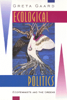

<body bgcolor="#FFFFFF" text="#000000" link="#0000FF" vlink="#CC0000" alink="#CC0000"><center><hr width="350" size="1" align="center" noshade>An illuminating account of two interconnected social movements from their grassroots origins in the 1970s to the 1996 Green presidential campaign<hr width="350" size="1" align="center" noshade><p><a href="https://cdcshoppingcart.uchicago.edu/Cart/ChicagoBook.aspx?ISBN=9781566395694&&PRESS=temple" target="_top">Buy this book!</a> | <a href="https://cdcshoppingcart.uchicago.edu/Cart/Cart.aspx?PRESS=temple" target="_top">View Cart</a> | <a href="https://cdcshoppingcart.uchicago.edu/Cart/Cart.aspx?PRESS=temple" target="_top">Check Out</a></p><p></p></center><!--none//--><h1>Ecological Politics</h1>
<H2>Ecofeminists and the Greens</H2>
<h3>Greta Gaard</h3>
<P>cloth 1-56639-569-0 $77.50, May 98, <FONT COLOR=#990033>Out of Stock Unavailable</FONT>
<br>paper 1-56639-570-4 $33.95, May 98, <FONT COLOR=#990033>Available</FONT>
<br>Electronic Book 1-43990-398-0 $33.95 <FONT COLOR=#990033>Out of Stock Unavailable</FONT>
<BR> 337 pp
6x9
1&nbsp;table 2&nbsp;figures
</P><p>In the 1980s, ecofeminism and the U.S. Green movement seemed to offer some of this country's most powerful and promising solutions to problems of social and environmental justice. A decade later, ecofeminism has become more a perspective than a movement, and divisions within the Greens have deepened as its national focus has shifted from issue-based politics to party building. Why have these movements faltered?
<p>A member of both movements, Greta Gaard bases her analysis on her personal experience as well as extensive secondary sources and interviews with key theorists, activists, and speakers across the United States. By allowing each movement's members to speak for themselves, she traces the separate origins and development of each movement, explains their connections, and reveals the light that each can cast upon the other and on the difficulties facing social action in general.
<p>Beginning with the ecofeminists, Gaard describes the paths&#151environmental causes, the feminist peace movement, the feminist spirituality movement, the animal liberation movement, and the anti-toxics movement, as well as experiences of interconnectedness&#151that have led women (and a few men) to articulate an ecofeminist perspective. Tracing the movement from the 1980s to the present, she defines its present strands as liberal ecofeminism, radical ecofeminism, socialist ecofeminism, and social ecofeminism.
<p>Gaard illustrates the development of the U.S. Greens from a national movement into a political party. She defines the various factions&#151the Left Greens, the Youth Greens, and the Green Politics Network&#151that influenced the movement's direction and underlay the debates during Ralph Nader's 1996 presidential campaign. She shows how the history of these three groups can be seen as stages in the transition from a leftist and sometimes anarchist focus to an emphasis on electoral political action that places the Green movement squarely within the pattern of other social movements around the world.
<p>Despite the significant influence that ecofeminists have had in shaping the Greens as a national movement, many have chosen to withdraw from the Greens. Gaard looks at the reasons for member disaffection and draws disturbing conclusions about the compatibility between liberal feminism, cultural ecofeminism, and patriarchal politics. She also presents the divisions within the Greens as ongoing battles within the new left, the radical ecology movement, and various social justice movements. She focuses on three general areas&#151conflicts over philosophy, conflicts over representation, and conflicts over strategy&#151to make suggestions for how to bring about the kind of social transformation envisioned by both the Greens and the ecofeminists. Arguing that the Concord Principles represent a populist form of liberal democracy that fundamentally betrays both ecofeminism and Green philosophy, she uses the 1996 Nader campaign as a departure point for developing an ecofeminist theory of radical democracy and to speculate on future directions for Green politics and for ecofeminism. Her analysis illuminates the nature and direction of each of these important movements and the pressures and conflicts experienced by all social movements at the end of the twentieth century.
<BR>&nbsp;<h2>Excerpt</h2><P>Excerpt available at <a href="http://www.temple.edu/tempress">www.temple.edu/tempress</a></p>
<BR>&nbsp;<h2>Reviews</h2>
<p><i>"The sophistication of Gaard's analysis recommends itself to anyone concerned with how promising social currents may become stillborn, falling victim to their own ambition and autocratic structures."</i>
<br>&#151<b><i>The Women's Review of Books</i></b>
<BR>&nbsp;<h2>Contents</h2><P>
<p>Acknowledgments
<br>Introduction
<br>1. Ecofeminist Roots
<br>2. The U.S. Greens: From Movement to Party
<br>3. The U.S. Greens as a Social Movement
<br>4. Ecofeminists in the Greens
<br>5. Divisions Among the Greens
<br>6. Democracy, Ecofeminism, and the Nader Presidential Campaign
<br>Conclusion
<br>Appendixes:
<br>A. Chronology of Ecofeminism
<br>B. Chronology of U.S. Greens
<br>C. The Original Ten Key Values of the U.S. Greens
<br>D. The Pillars, Values, and Principles of the Greens
<br>E. Interviews
<brNotes
<br>Index
</P><BR>&nbsp;<H2>About the Author(s)</H2>
<table><tr><td valign="top"><img src="/tempress/authors/1204_au.gif" height="90" width="75"></td><td width="100%" valign="middle"><p><B>Greta Gaard</B> is Associate Professor of Humanities, Fairhaven College at Western Washington University. She is the editor of <i><a href="948_reg.html" target="_top">Ecofeminism: Women, Animals, Nature</a></i> (Temple).</P></td></tr></table>
<BR><H2>Subject Categories</H2>
<p><A HREF="/tempress/nature.html" TARGET="_top">Nature and the Environment</a>
<BR><A HREF="/tempress/women.html" TARGET="_top">Women's Studies</a>
<BR>
</p>
<p align="center"><a href="https://cdcshoppingcart.uchicago.edu/Cart/ChicagoBook.aspx?ISBN=9781566395694&&PRESS=temple" target="_top">Buy this book!</a> | <a href="https://cdcshoppingcart.uchicago.edu/Cart/Cart.aspx?PRESS=temple" target="_top">View Cart</a> | <a href="https://cdcshoppingcart.uchicago.edu/Cart/Cart.aspx?PRESS=temple" target="_top">Check Out</a></p><p><font face="Arial" size="1"><a href="copyright.html" onMouseOver="window.status='Web Copyright Policy';return true;" onMouseOut="window.status=''" title="Web Copyright Policy">&copy;</a> 2015 <a href="http://www.temple.edu" target="new" onMouseOver="window.status='Link to Temple University home page';return true;" onMouseOut="window.status=''" title="Link to Temple University home page">Temple University</a>. All Rights Reserved. http://www.temple.edu/tempress/titles/1204_reg.html</font></p>